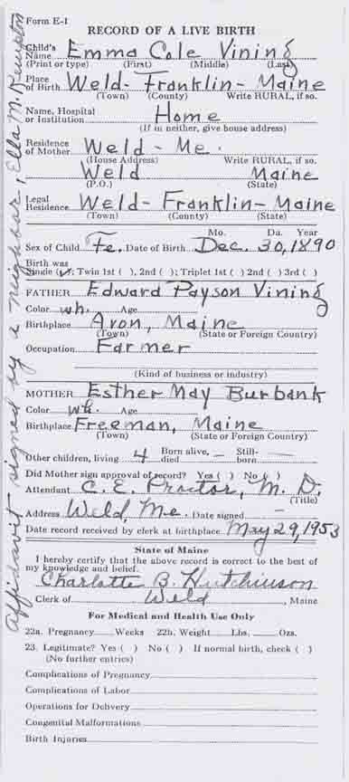
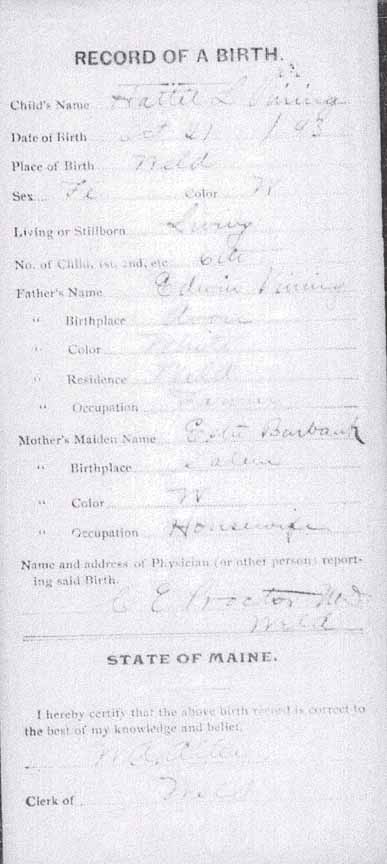
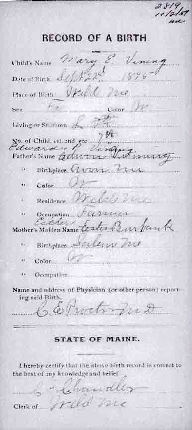

Birth Data
Birth records for Emma Cole Vining, Hattie L. Vining and Mary E. Vining, daughters of Edward Payson Vining and Esther M. (Burbank) Vining (from Maine State Archives):


Family Data
Hattie L. Vining and her first husband, Chester B. Ranger, thought to be taken at the time of their wedding:Census Data
| 1880 | 1890 | 1900 | 1910 | 1920 | 1930 | |
| Edward Payson Vining | 29 | ? | 49 | 58 | dead | |
| Esther M. (Burbank) Vining | ? | ? | 40 | 47 | ? | ? |
| Blanche L. Vining | ? | dead | ||||
| Clinton E. Vining | ? | 16 | 26 | married and living in separate household | ||
| Roscoe Dyar Vining | ? | 14 | married and living in separate household | |||
| John Burbank Vining | ? | 11 | not living in this household | married and living in separate household | ||
| Emma Cole Vining | 9 | married and living in separate household | ||||
| Hattie L. Vining | 6 | 16 | married and living in separate household | |||
| Mary E. Vining | 4 | 13 | married and living in separate household | |||
| Nellie J. Vining | 2 | 11 | married and living in separate household | |||
| Benjamin L. Vining | 0 months | 10 | ? | 29, living in separate household [see note below] |
||
| Raymond G. Vining | 8 | 18, living in separate household [see note below] |
? | |||
| Bertha A. Vining | 6 | 16, living in separate household [see note below] |
married and living in separate household |


Death Data
Death record for Edward Payson Vining (from Maine State Archives):